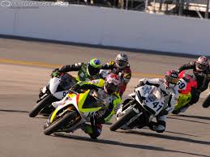
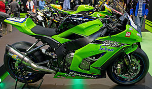

.jpg)
| Fav cars | ||
|---|---|---|
| The 2017 Grand Prix motorcycle racing season is the 69th F.I.M. Road Racing World Championship season. Marc Márquez started the season as defending World Champion, having secured his fifth overall title at the 2016 Japanese motorcycle Grand Prix with three races remaining. |  | |
| The Kawasaki Ninja is the trademarked name of several series of Kawasaki sport bikes, that started with the 1984 GPZ900R. |  | |
| The Kawasaki GPZ900R (also known as the ZX900A or Ninja 900) is a motorcycle that was manufactured by Kawasaki from 1984 to 2003. It is the earliest member of the Ninja family of sport bikes. The 1984 GPZ900R (or ZX900A-1) was a revolutionary design[1][3] that became the immediate predecessor of the modern-day sport bike.[5] Developed in secret over six years, it was the world's first 16-valve liquid-cooled inline four-cylinder motorcycle engine, years ahead of rival manufacturers' efforts.[3][7] The 908 cc four-cylinder engine delivered 115 bhp (86 kW), allowing the bike to reach speeds of 151 mph (243 km/h), making it the first stock road bike to exceed 150 mph (240 km/h).[3] Prior to its design, Kawasaki envisioned producing a sub-liter engine that would be the successor to the Z1.[3] Although its steel frame, 16-inch front and 18-inch rear wheels, air suspension, and anti-dive forks were fairly standard at that time, the narrow, compact engine[5] was mounted lower in the frame, allowing it to take Japanese superbike performance to a new level.[3] Only three months after being unveiled to the press in December 1983, dealers entered three works GPZ900R bikes in the Isle of Man Production TT finishing in first and second place.[3][5][8][9] | |
|
| Road King (Transformers), a fictional character from the Transformers series. Road King FLHR, in the Harley-Davidson FL family of motorcycles Road Kings (pinball), a pinball machine made by Williams Harlem Road Kings comedy basketball team Sylvester D. Clay Road Kings, rockabilly band Jesse Dayton |
made april 16th